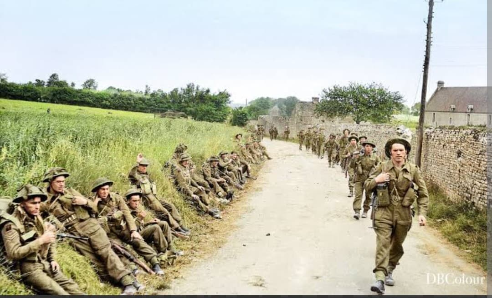
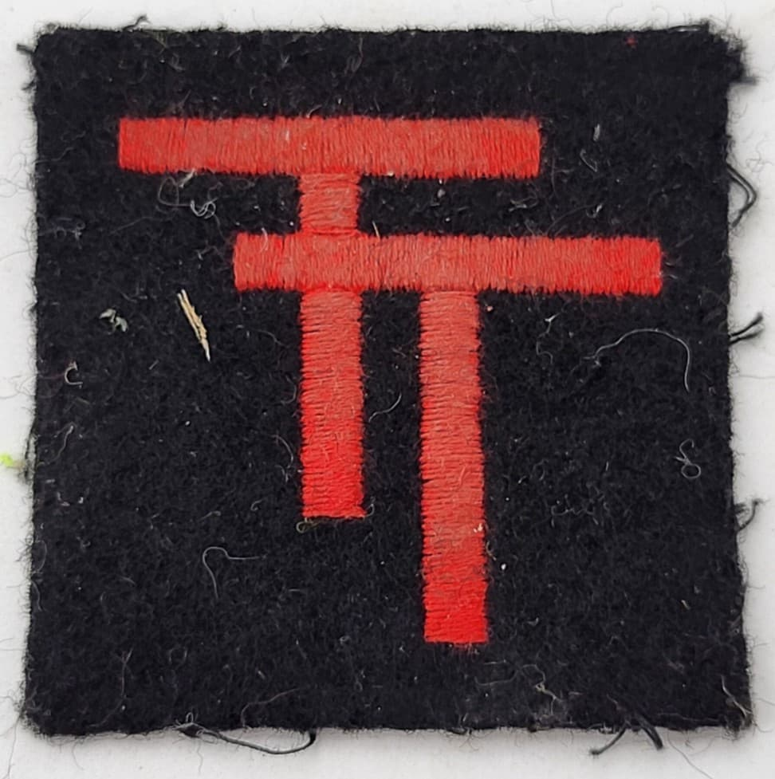
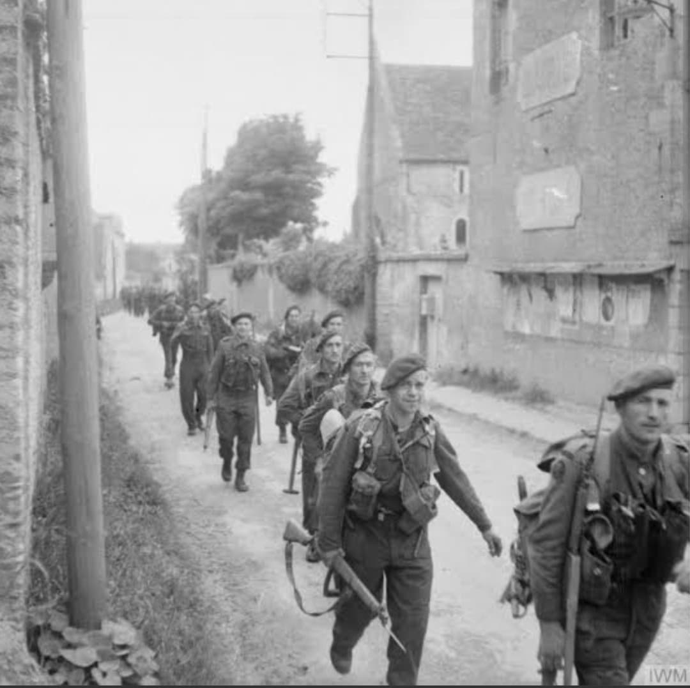

Les vétérans infatigables : de la défense de l'aride désert libyen et de l'El Alamein à l'assaut de Gold Beach en Normandie

La 50th (Northumbrian) Infantry Division est l'une des divisions d'infanterie de première ligne les plus aguerries, endurantes et respectées de la British Army durant la Seconde Guerre mondiale.
Ayant combattu sur les théâtres les plus difficiles du conflit — de la campagne de France en 1940 aux fournaises du désert en Afrique du Nord, puis de la Sicile jusqu'aux plages de Normandie le 6 juin 1944 —, la division s'est forgé une réputation légendaire de fiabilité et de bravoure face aux pires épreuves.
Constituée initialement à partir de régiments territoriaux du nord-est de l'Angleterre (notamment le Northumberland et le Yorkshire), la division est commandée au moment du débarquement par le major général **Douglas Graham**.
Son insigne d'épaule distinctif représente un T noir majuscule entrelacé ou stylisé (souvent lié au blason historique de Northumbrie), symbole reconnaissable entre mille par les forces alliées sur tous les fronts.

Après avoir participé aux combats de 1940 en France et à l'évacuation de Dunkerque, la 50th Division est envoyée au Moyen-Orient. Elle joue un rôle clé dans la défense de l'Égypte, s'illustrant à la première bataille d'**El Alamein**, puis lors de la longue avancée à travers le désert libyen sous les ordres de la 8e armée du général Montgomery.
Après des milliers de kilomètres parcourus dans le sable, la division est ramenée en Grande-Bretagne fin 1943 pour préparer l'assaut amphibie de grande envergure en Europe de l'Ouest.

Le jour J, la 50th Infantry Division est chargée de mener l'assaut amphibie sur la plage centrale de **Gold Beach** à Ver-sur-Mer et Arromanches. Malgré une résistance obstinée des batteries côtières allemandes et des obstacles piégés, les vétérans nord-tirent le meilleur de leur expérience passée pour percer les défenses en un temps record.
Dans les jours qui suivent, elle s'enfonce rapidement à l'intérieur des terres, s'emparant de Bayeux et jouant un rôle de premier plan dans les violents combats de Tilly-sur-Seulles.
Après la Normandie, la division participe à la libération de la Belgique et des Pays-Bas (notamment à Arnhem et lors de l'opération Market Garden), avant d'être retirée du front pour servir de unité de formation et d'encadrement en raison de l'épuisement de ses effectifs après tant d'années de guerre continue.
Page du Musée HOP WW2 – Section Unités & Divisions